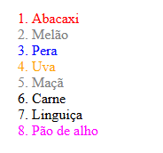

Especifidade Seletores
Código

Saída de Código:

Como funciona:
li{color:red;}- | Define a cor de todos os elementos "li" para vermelho
.churras{color:green;}- | Define a cor de todos os elementos da classe "churras" para verde
.fruta{color:gray}- | Define a cor de todos os elementos da classe "fruta" para cinza
li+li.churras{color: black;}- | Define a cor de todos os elementos "li" que seguem elementos da classe "churras" para preto
.churras[draggable="true"]{color: magenta;}- | Define a cor de todos os elementos da classe "churras" com o atributo "draggable=true" para magenta
#lip1,#lip2,#lip3{color:blue}- | Define a cor de todos os elementos com ID = "lip1", "lip2" ou "lip3" para azul
#lip3.fruta{color:orange}- | Define a cor do elemento de classe "fruta" e ID = "lip3" para laranja
ol>li.churras#lip5{color:purple}- | Define a cor do elemento de classe "churras" e ID = "lip5" dentro de um elemento "ol" para roxo
Por que cada regra foi aplicada?
- Item 1 - Abacaxi (Vermelho)
- | Recebe a regra 1, por ser um elemento "li" e não possuir
nenhuma classe ou ID que corresponda às outras regras.
- Item 2 - Melão (Cinza)
- | Recebe a regra 3, por ser da classe "fruta", que tem uma
especificidade maior que a regra geral aplicada aos elementos "li".
- Item 3 - Pera (Azul)
- | Recebe a regra 6, por ter ID = "lip2". Seletores de ID
possuem maior especificidade que seletores de classe, prevalecendo
sobre a regra 3.
- Item 4 - Uva (Laranja)
- | Recebe a regra 7, por ter ID = "lip3" e classe = "fruta".
A combinação dos dois seletores tem uma especificidade maior
que a regra 6, que utiliza apenas o ID.
- Item 5 - Maçã (Cinza)
- | Recebe a regra 3, por ser da classe "fruta".
Essa regra domina a regra 1 por ter uma maior
especificidade.
- Item 6 - Carne (Verde)
- | Recebe a regra 2, por ser da classe "churras".
A regra 4 não se aplica, já que o elemento anterior não
pertence à classe "churras".
- Item 7 - Linguiça (Preto)
- | Recebe a regra 4, por ser um elemento "li" com classe
"churras" que aparece imediatamente depois de outro "li".
Essa regra tem uma especificidade maior que a regra 2.
- Item 8 - Pão de alho (Magenta)
- | Recebe a regra 5, por ser da classe "churras" e ter o
atributo draggable="true". Essa combinação tem uma especifidade maior
que as regras 2 e 4.